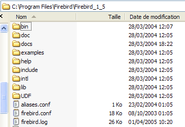
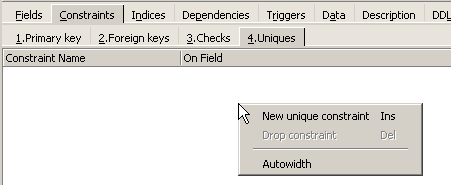

2. Firebird 教程
在介绍 SQL 语言的基础知识之前，我们将向读者介绍如何安装 Firebird SGBD 以及图形客户端 IB-Expert。
2.1. 在哪里可以找到 Firebird？
Firebird 的官方网站是 [http://firebird.sourceforge.net/]。下载页面提供以下链接（2005年4月）：

需下载以下文件：
适用于 Windows 的 SGBD | |
一个用于应用程序的类库，可直接访问SGBD，无需通过ODBC驱动程序。 | |
Firebird 的 ODBC 驱动程序 |
安装这些组件。SGBD 安装在内容类似于以下结构的文件夹中：
 |
二进制文件位于 [bin] 文件夹中：
 |
用于启动/停止 SGBD | |
用于管理数据库的命令行客户端 |
请注意，默认情况下，SGBD的管理员名为[SYSDBA]，密码为[masterkey]。[Démarrer]中已安装以下菜单：

通过 [Firebird Guardian] 选项可启动/停止 SGBD。启动后，SGBD 的图标会保留在 Windows 任务栏中：
 |
若要使用命令行客户端 [isql.exe] 创建和操作 Firebird 数据库，请务必阅读产品附带的文档（位于 [doc] 文件夹中）。
2.2. Firebird文档
有关 Firebird 及 SQL 语言的文档可访问 Firebird 网站（2006 年 1 月）：

提供多种英文手册：
开始使用 FB | |
了解 FB 返回的错误代码 |
此外，还提供了关于 SQL 语言的培训手册：

了解如何创建表、可用的数据类型等 | |
使用 Firebird 学习 SQL 的参考指南 |
使用图形化客户端是快速操作 Firebird 并学习 SQL 语言的一种方法。下文将介绍 IB-Expert 这一图形化客户端。
2.3. 借助 IB- Expert 操作 SGBD Firebird
IB-Expert 的主网站是 [http://www.ibexpert.com/]。下载页面提供以下链接：

我们将选择免费版本 [Personal Edition]。下载并安装后，将生成如下所示的文件夹：

可执行文件为 [ibexpert.exe]。通常在 [Démarrer] 菜单中会有一个快捷方式：

启动后，IBExpert将显示以下窗口：

使用选项 [Database/Create Database] 来创建数据库：
可能是 [local] 或 [remote]。这里我们的服务器与 [IBExpert] 位于同一台机器上。因此我们选择 [local] | |
使用下拉列表中类似 [dossier] 的按钮来指定数据库文件。Firebird 将整个数据库封装在一个文件中，这是其优势之一。只需复制该文件即可将数据库从一台机器迁移到另一台。后缀 [.gdb] 会自动添加。 | |
SYSDBA 是当前 Firebird 发行版的默认管理员 | |
masterkey 是当前 Firebird 发行版中管理员 SYSDBA 的密码 | |
要使用的方言是 SQL | |
如果勾选此复选框，IBExpert将在数据库创建完成后显示指向该数据库的链接 |
如果点击创建按钮 [OK] 时，您会收到以下警告：

说明您尚未启动 Firebird。请启动它。此时会弹出一个新窗口：

要使用的字符集。尽管上方的屏幕截图未显示任何信息，但建议从下拉列表中选择 [ISO-8859-1] 字符集，该字符集支持带重音的拉丁字符。 |
[IBExpert] 能够处理各种源自 Interbase 的 SGBD。请选择您已安装的 Firebird 版本： |
当 [Register] 确认此新窗口后，将得到以下结果：

要访问创建的数据库，只需双击其链接。IBExpert 随后将显示一个树形结构，用于访问数据库的属性：

2.4. 创建数据表
现在创建一个表。右键单击 [Tables]（参见上图），然后选择 [New Table] 选项。此时将显示表属性定义窗口：
 |
首先，通过输入框 [1] 为该表命名 [ARTICLES]：
 |
使用输入框 [2] 定义主键 [ID]：
 |
双击字段的 [PK]（主键）区域，即可将该字段设为主键。使用位于 [3] 上方的按钮添加字段：

在“编译”定义之前，表不会被创建。 使用上方的 [Compile] 按钮来完成表的定义。IBExpert 会准备生成表的 SQL 查询，并请求确认：

有趣的是，IBExpert 会显示其已执行的 SQL 查询。 这既有助于学习 SQL 语言，也有助于了解可能使用的专有方言 SQL。 [Commit] 按钮用于确认当前事务，[Rollback] 按钮用于取消当前事务。 此处通过 [Commit] 进行确认。操作完成后，IBExpert 将创建的表添加到数据库的树形结构中：

双击该表即可查看其属性：

通过面板 [Constraints]，我们可以为该表添加新的完整性约束。让我们打开它：

我们可以看到之前创建的主键约束。还可以添加其他约束：
- 外键 [Foreign Keys]
- 字段完整性约束 [Checks]
- 字段唯一性约束 [Uniques]
请注意：
- 字段 [ID, PRIX, STOCKACTUEL, STOKMINIMUM] 的值必须大于 0
- 字段 [NOM] 必须不为空且唯一
打开面板 [Checks]，在约束定义区域中右键单击以添加新约束：

定义所需的约束条件：

请注意，上文中的约束 [NOM<>''] 使用的是两个单引号，而非双引号。点击上方的 [Compile] 按钮编译这些约束：

同样，IBExpert 通过列出已执行的 SQL 查询，展现了其教学功能。 现在我们转向 [Constraints/Uniques] 面板，以说明名称必须是唯一的。这意味着表中不能出现两次相同的名称。

定义约束：

然后编译它。完成后，打开表 [ARTICLES] 的面板 [DDL]（数据定义语言）：

该面板会生成包含所有约束条件的表生成代码 SQL。我们可以将此代码保存到脚本中，以便日后重新执行：
SET SQL DIALECT 3;
SET NAMES NONE;
CREATE TABLE ARTICLES (
ID INTEGER NOT NULL,
NOM VARCHAR(20) NOT NULL,
PRIX DOUBLE PRECISION NOT NULL,
STOCKACTUEL INTEGER NOT NULL,
STOCKMINIMUM INTEGER NOT NULL
);
ALTER TABLE ARTICLES ADD CONSTRAINT CHK_ID check (ID>0);
ALTER TABLE ARTICLES ADD CONSTRAINT CHK_PRIX check (PRIX>0);
ALTER TABLE ARTICLES ADD CONSTRAINT CHK_STOCKACTUEL check (STOCKACTUEL>0);
ALTER TABLE ARTICLES ADD CONSTRAINT CHK_STOCKMINIMUM check (STOCKMINIMUM>0);
ALTER TABLE ARTICLES ADD CONSTRAINT CHK_NOM check (NOM<>'');
ALTER TABLE ARTICLES ADD CONSTRAINT UNQ_NOM UNIQUE (NOM);
ALTER TABLE ARTICLES ADD CONSTRAINT PK_ARTICLES PRIMARY KEY (ID);
2.5. 向表中插入数据
现在是时候向表 [ARTICLES] 中插入数据了。为此，请使用其面板 [Data]：

通过双击表格中每行对应的输入字段即可输入数据。 点击按钮 [+] 可添加新行，点击按钮 [-] 可删除行。这些操作都在一个事务中进行，需通过按钮 [Commit Transaction] 进行提交（参见上文）。若未进行提交，数据将丢失。
2.6. [IB-Expert] 的编辑器 SQL
SQL 语言（结构化查询语言）允许用户：
- 创建表，并指定其将存储的数据类型以及数据必须满足的约束条件
- 向表中插入数据
- 修改部分数据
- 删除部分数据
- 利用表中的内容获取信息
- ……
IBExpert允许用户以图形化方式执行操作1至4。我们刚才已经看到了这一点。当数据库包含许多表，且每张表都有数百行数据时，我们需要一些难以通过视觉获取的信息。例如，假设一个网络虚拟商店每月有数千名买家。 所有购买记录都存储在数据库中。六个月后，发现产品“X”存在质量问题。希望联系所有购买该产品的顾客，请他们将产品寄回进行免费更换。如何查找这些顾客的地址？
- 我们可以手动查看所有数据表并逐一查找这些买家，但这将耗费数小时。
- 也可以发出一个 SQL 指令，几秒钟内就能得到这些人的名单
只要表中的数据量较大，SQL 语言就非常有用
- 当表中的数据量较大时
- 当存在大量相互关联的表时
- 需要获取的信息分散在多个表中
- ...
现在我们介绍 IBExpert 中的 SQL 编辑器。可通过选项 [Tools/SQL Editor] 或 [F12] 访问该编辑器：

此时，我们将进入一个功能强大的 SQL 查询编辑器，可以在其中进行查询操作。输入一个查询：

点击上方的 [Execute] 按钮执行该查询。结果如下：

上图中，[Results] 选项卡显示了 SQL 和 [Select] 命令的结果表。 若要发出新的命令 SQL，只需返回 [Edit] 选项卡。此时将显示已执行的命令 SQL。

工具栏上有几个有用的按钮：
- [New Query] 按钮可切换至新的查询 SQL：

此时将显示一个空白编辑页面：

此时可以输入新的命令 SQL：

并执行该命令：

回到 [Edit] 选项卡。已发出的各个 SQL 指令会被 [IB-xpert] 保存。 通过按钮 [Previous Query]，可以返回之前生成的 SQL 命令：

此时将返回上一个请求：

按钮 [Next Query] 则可跳转至下一个命令 SQL：

随后，在已保存的 SQL 订单列表中，会找到紧随其后的 SQL 订单：

按钮 [Delete Query] 可用于从已保存订单列表中删除订单 SQL：

按钮 [Clear Current Query] 可清除所显示的订单 SQL 的编辑器内容：

按钮 [Commit] 可将对数据库所做的修改最终提交：

按钮 [RollBack] 可撤销自上次执行 [Commit] 以来对数据库所做的修改。如果自连接数据库以来未执行过 [Commit]，则将撤销自本次连接以来所做的所有修改。

举个例子。在表中插入一行：

SQL命令已执行，但未显示任何结果。我们无法确定插入操作是否成功。为确认这一点，请在[New Query]之后执行以下SQL命令：

结果如下所示：

因此，该行确实已被插入。现在让我们通过另一种方式查看表的内容。在数据库资源管理器中双击表 [ARTICLES]：
我们得到如下表：

上方的箭头按钮可用于刷新表格。刷新后，上方的表格并未发生变化。看起来新行似乎并未被插入。 返回编辑器 SQL（F12），然后通过按钮 [Commit] 确认生成的作业 SQL：

完成上述操作后，让我们回到表 [ARTICLES]。我们可以发现，即使使用按钮 [Refresh]，情况也没有任何变化：
在上方，打开 [Fields] 选项卡，然后返回 [Data] 选项卡。这次插入的行显示正确：

当开始执行各种 SQL 命令时，编辑器会在数据库上打开一个所谓的“事务”。 编辑器SQL通过这些命令SQL所做的修改，仅在保持在同一编辑器SQL内时可见（可以同时打开多个编辑器）。 这就像编辑器 SQL 并非在实际数据库上操作，而是在其自身的副本上操作。实际上，情况并非完全如此，但这个比喻有助于我们理解事务的概念。 在事务期间对副本所做的所有修改，只有在通过 [Commit Transaction] 确认后，才会显示在实际数据库中。此时当前事务结束，并开始一个新事务。
交易过程中所做的修改可以通过名为 [Rollback] 的操作撤销。让我们进行以下实验。先启动一个新交易（只需在当前交易中执行 [Commit] 即可），并使用以下 SQL 命令：

执行该命令以删除表 [ARTICLES] 中的所有行，然后执行 [New Query] 并输入以下新命令 SQL：

我们得到以下结果：

所有行均已被删除。请注意，此操作是在表 [ARTICLES] 的副本上执行的。为验证这一点，请双击下方的表 [ARTICLES]：
并查看 [Data] 选项卡：

即使使用按钮 [Refresh]，或切换到标签页 [Fields] 后再返回标签页 [Data]，上述内容也不会发生变化。这一点已经解释过了。 我们现在处于另一个事务中，该事务正在处理其自身的副本。现在让我们回到编辑器 SQL（F12），并使用按钮 [RollBack] 来撤销之前执行的行删除操作：

系统要求我们确认：

确认。编辑器 SQL 确认更改已撤销：

重新执行上述请求 SQL 以进行验证。被删除的行已恢复：

操作 [Rollback] 将编辑器 SQL 正在处理的副本恢复到了事务开始时的状态。